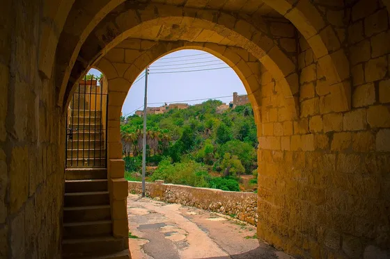

.jpg){kind=link}
Local services
The council office is at Orvieto Square, Kerċem KCM 1360. Its website provides local notices, service information and contact arrangements. Check the relevant page when planning a visit or looking for a current council service.
Gozo · Village and valley
A parish square with the countryside close by. Start in Kerċem’s village centre, then plan a separate visit to Lunzjata Valley. Victoria and Fontana offer their own nearby contexts for the rest of the day.

Kerċem Local Council identifies the parish sanctuary’s joint dedication to Our Lady of Perpetual Help and Pope St Gregory the Great. It records completion in 1851, parish status in 1885 and enlargement between 1906 and 1910. The church is the starting point for the village orientation map below.
The council office is at Orvieto Square, Kerċem KCM 1360. Its website provides local notices, service information and contact arrangements. Check the relevant page when planning a visit or looking for a current council service.
The MTA register lists Green Sports Bar & Grill on Triq Wenzu Mintoff, reference RST-32480. This is a licensed address in Kerċem. Confirm current trading, menu and table availability with the venue before making meal plans.
Victoria and Fontana have separate neighbourhood guides for a wider shopping or services trip. Compare the actual destination with your accommodation address, and check current service arrangements before travelling. Keep those neighbouring places distinct from Kerċem’s village centre.
Visit Gozo describes Lunzjata as an agricultural valley with springs and a chapel dedicated to the Annunciation near its entrance. The photograph shows the historic entrance in 2018; the parish church in Kerċem is a separate landmark.
The council’s churches and chapels guide describes approaches to the valley from Kerċem or Fontana. Choose the approach that fits your plans and check the current surface, steps and access arrangements for your needs. The photographed steps do not establish a step-free route.
Kerċem’s wider setting also reaches toward countryside and the western coast. A valley visit, a trip toward San Rafflu and a visit to Dwejra are different outings. The church map supplies orientation in the village, with no route line or general walking time to those destinations.
Route 313 lists Kerċem stop 1945, Girgor 1947 and Lunzjata 1949, as well as Santa Luċija stop 1942. Check your direction, destination and date in the journey planner before departure.
Santa Luċija on this route is the Gozo hamlet in the Kerċem area. It is a different place from the town of Santa Luċija on Malta. Use the island and the precise stop name when arranging travel or checking an accommodation address.
The council places Kerċem southwest of Victoria, between Lunzjata Valley and the surrounding hills. For a day that combines town services with countryside, plan the individual stops rather than relying on a single locality-wide journey estimate.
The marker shows the parish church footprint in Kerċem. It is not a property location, an entrance or a route into the valley.
Map data © OpenStreetMap contributors.
Editorial sources reviewed 18 November 2026. The MTA register reports an update on 18 November at 04:25 Malta time. A licence entry establishes a registered record, while current trading and service arrangements still require confirmation.
Explore Victoria ↗ · Explore Fontana ↗ · Explore San Lawrenz ↗
Nexus Marketplace
See local homes and explore food, shops and everyday places around the neighbourhood.
Mapped places within 2 km of the centre. This can include nearby neighbourhoods.